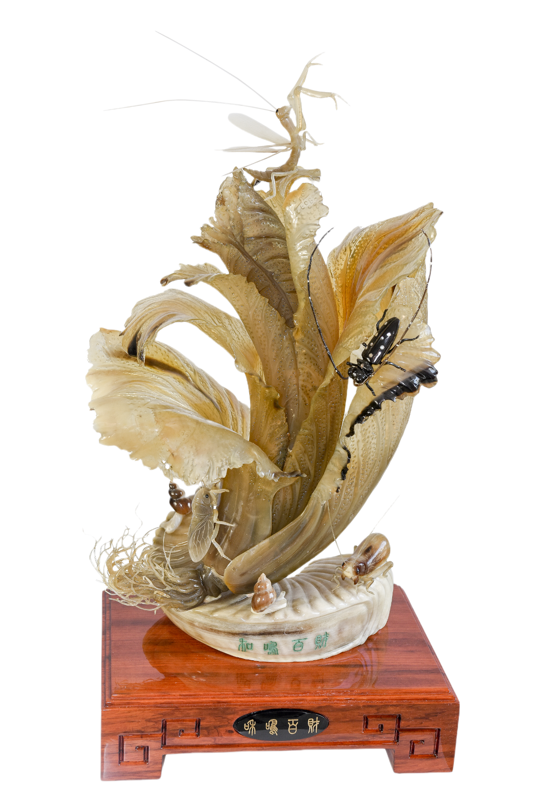
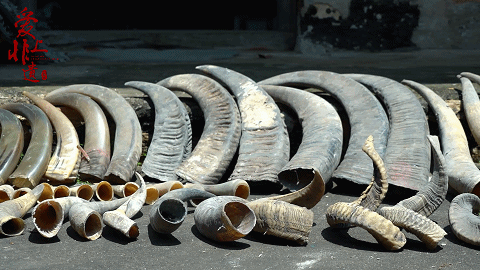
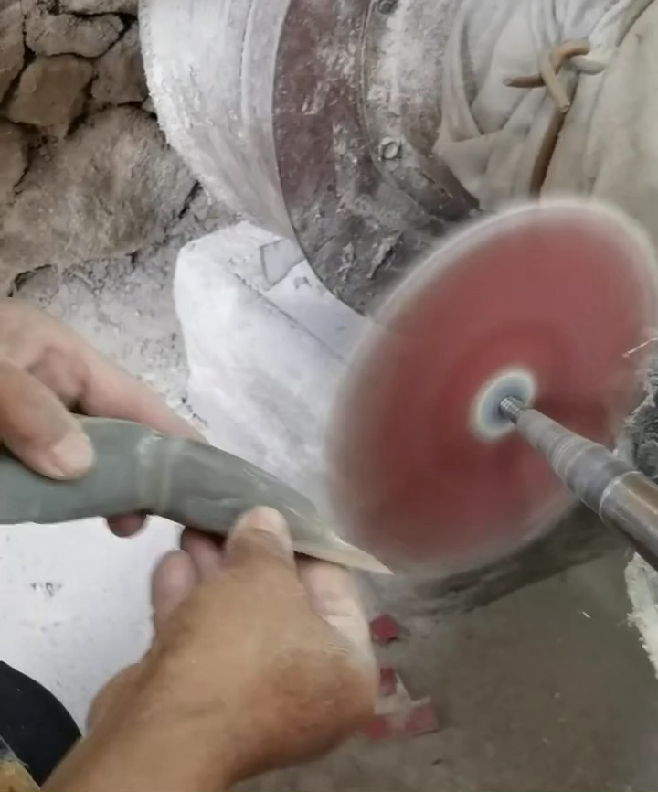
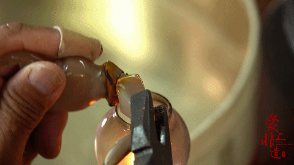
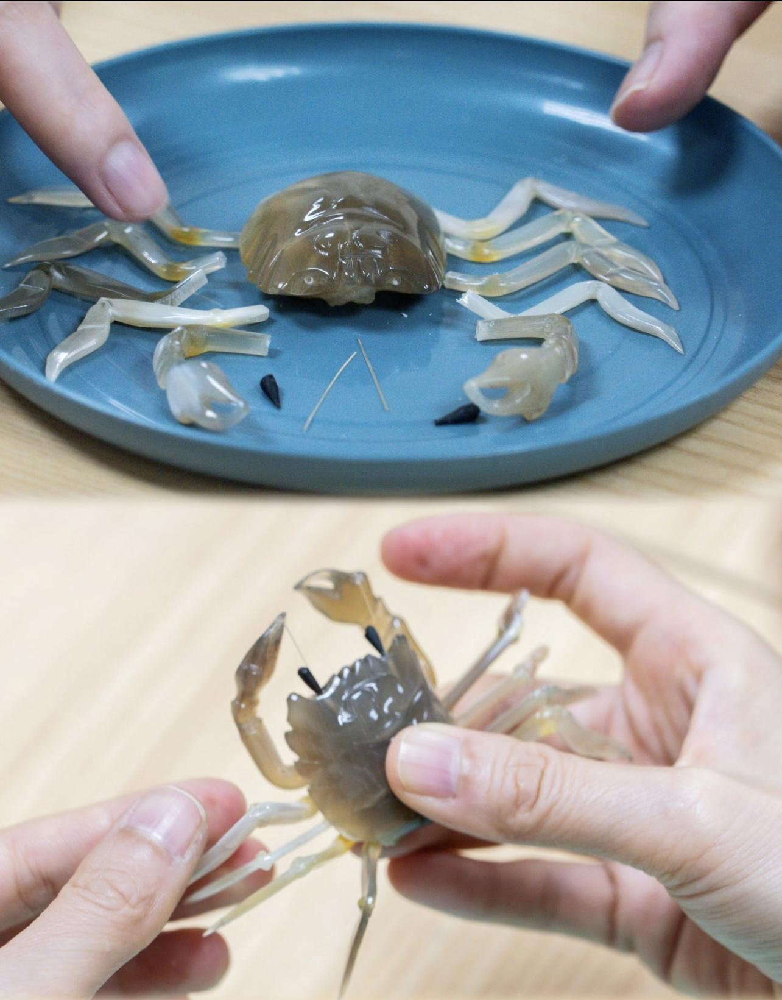

制作过程
匠心独运，精雕细琢
制作流程概览
角雕制作过程：完成一件大型角雕作品，主要经过选料、开料、削胚、雕刻、打磨、抛光、热处理、组装、整形等工序。 每个步骤都需要匠人具备丰富的经验和精湛的技艺，整个过程体现了传统手工艺的精髓。

详细制作步骤

选料与开料
选料：雕刻虾蟹等，需选用娇柔通透的白水牛角。雕刻神仙鱼等，则需选用斑纹的牛角。合浦角雕选料要抓住所需雕刻对象的不同特性进行。青黛色、琥珀色、翡翠色等，牛角本身斑纹并不规则，因此选料要因色取巧、因材施艺，做到变瑕为瑜。
开料：事先对雕刻工艺品不同部位的用料类型、大小进行粗略估计后，先用带锯将牛角对半切割，再根据角雕构件尺寸的需求进一步切割。
削胚
主要是为了打造角雕的三维造型。稳握构件，将其接触磨机，把握好力道，适时旋转一定幅度，将凹凸不平的表层削去，待牛角的表面基本被磨平，触感较为顺滑时，大致的三维造型中基本形成。
雕刻与打磨
雕刻：雕刻是角雕制作全程耗时最长的工序，先要将大致轮廓雕刻出来，再到具体的细节，一横、一竖、一深、一浅，皆是对细节的极致打磨，为的是让角雕更具还原度。各个部位，包括肌肉，都要精雕细刻。雕刻时，还要保持高度专注，稍有不慎，将可能前功尽弃。
打磨：合浦角雕之所以坯体通透、色泽亮丽，秘诀在于其特殊的打磨工序。独有的草木灰处理技艺既能使牛角保持天然的色泽，还能使其呈现半透明的橙红色。打磨时需明白构件的设计，手中的构件要同时跟着一直在运转的机器转动，其过程要耐心，也要把握好"火候"。除了注意手法，打磨的材料也有一定讲究，针对不同大小的角雕构件和成型需求，选用不同规格的工具。

抛光
抛光需要选用燃烧到90%程度的谷壳灰，这是合浦角雕的"独门"技艺。先给角雕构件均匀地抹上稻谷灰，再进行抛光，清洗后，使之呈现出晶莹剔透、温润透亮的效果。

热处理
用热处理的方式做造型，则需要取用煤油灯或酒精灯火炽烤材料，可以使之自由弯曲。对于一些比较细小的构件，则要用燃香进行加热。牛角材质富含蛋白质，通过加热的方式可将构件打造成理想的形态，但如果温度过高就会失去其原有的坚韧，变得易脆、易碎。角雕各个构件的厚度不同，停留加热的时间也不同。如果其表面出现烧黄的迹象时，则要回到打磨工序，将其磨成原有的颜色，再进行下一步操作。

组装与整形
组装：先对此前处理好的各个构件进行清点，按照预先构想进行摆放，再使用胶水粘合或隐藏镶嵌的方式对雕刻、打磨、抛光完成的各个部分进行组合。合浦角雕的构图，采取虚实相间、疏密有致、工艺结合等手法，其艺术感染力极强。
整形：这是最后一步，也是最重要一环，需要检查角雕的各个构件是否处于自然的状态，是否达成了真正的神态美和神韵美。对未能达到预期的情况，一般会再做热造型来进行调整。
技艺要求
基本功要求
角雕制作需要扎实的基本功，包括对材料的了解、工具的熟练使用、以及雕刻技法的掌握。
艺术修养
除了技术层面的要求，还需要具备一定的艺术修养，能够理解和表现作品的艺术内涵。
耐心细致
角雕制作是一个需要极大耐心和细致的工作，每个细节都需要精心处理。
创新思维
在继承传统的基础上，还需要具备创新思维，创作出具有时代特色的作品。
常用工具
雕刻刀
用于精细雕刻的各种刀具，包括平刀、圆刀、三角刀等
磨机
用于削胚和打磨，打造角雕的三维造型
带锯
用于开料，将牛角对半切割成所需尺寸
酒精灯
用于热处理造型，使牛角可自由弯曲造型